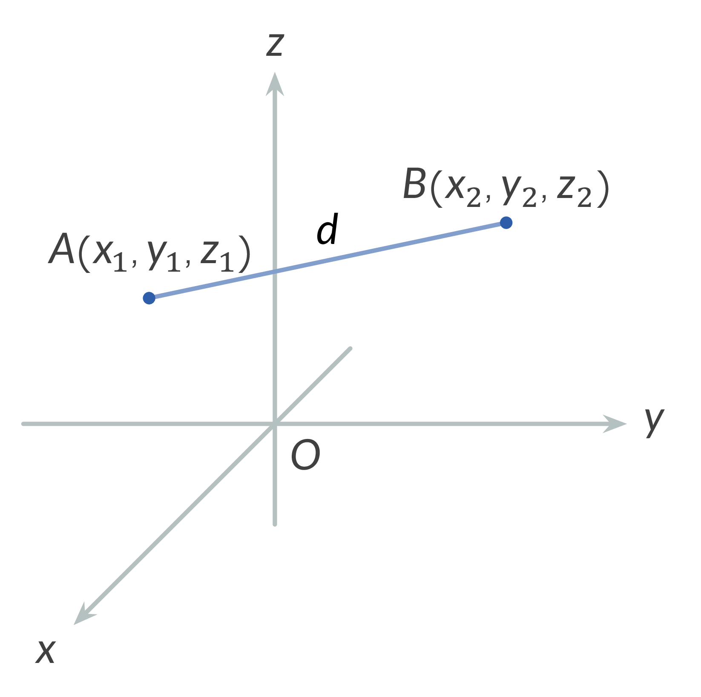
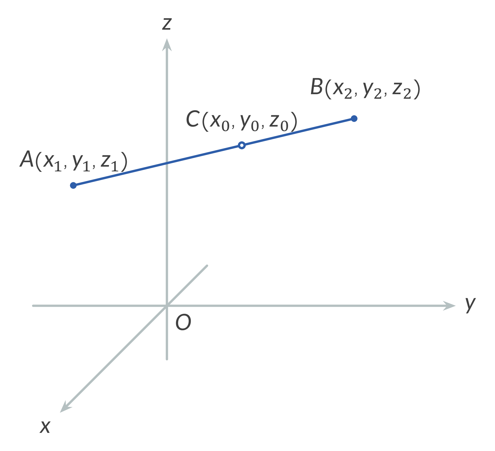
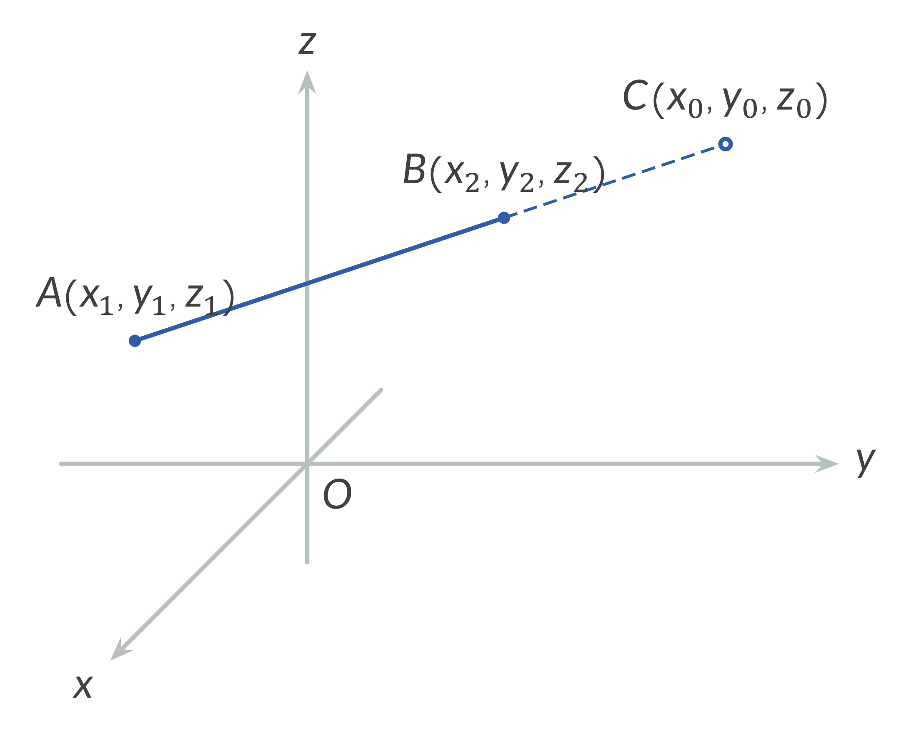
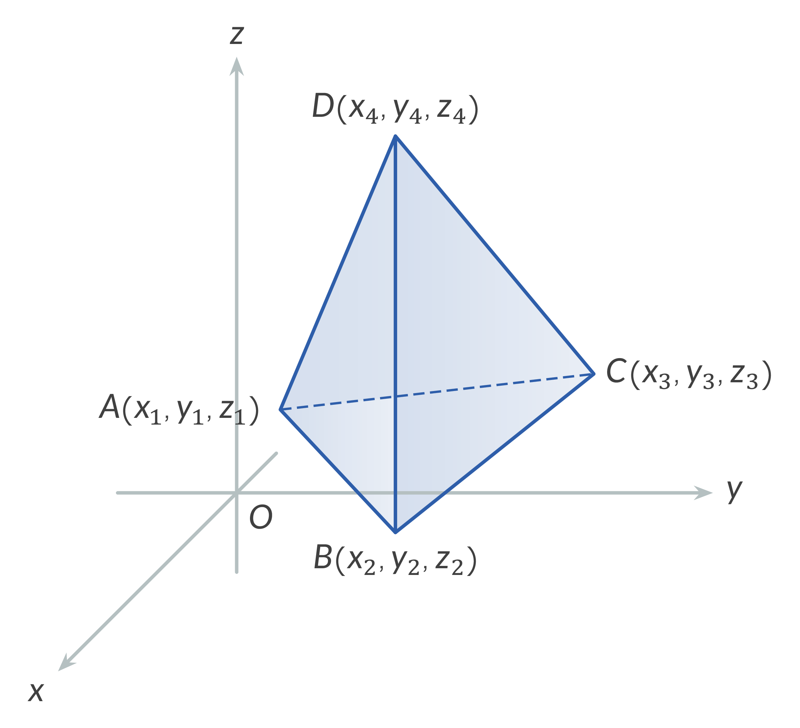

Point coordinates: $x_{0}$, $y_{0}$, $Z_{0}$, $X_{1}$, $y_{1}$ $Z_{1},...$
Real number: $\lambda$
Distance between two points: $d$
Area: $S$
Volume: $V$
1. Distance Between Two Points
$d = AB = \sqrt{(x_{2}-x_{1})^{2}+(y_{2}-y_{1})^{2}+(z_{2}-z_{1})^{2}}$

2. Dividing a Line Segment in the Ratio $\lambda$
$x_{0}=\dfrac{x_{1}+\lambda x_{2}}{1+\lambda}, y_{0}=\dfrac{y_{1}+\lambda y_{2}}{1+\lambda}, z_{0}=\dfrac{z_{1}+\lambda z_{2}}{1+\lambda}$
where
$\lambda=\dfrac{AC}{CB}, \lambda \neq -1.$


3. Midpoint of a Line Segment
$x_{0}=\dfrac{x_{1}+x_{2}}{2}; y_{0}=\dfrac{y_{1}+y_{2}}{2}, z_{0}=\dfrac{z_{1}+z_{2}}{2}, \lambda=1.$
4. Area of a Triangle
The area of a triangle with vertices $P_{1}(x_{1},y_{1},z_{1})$, $P_{2}(x_{2},y_{2},z_{2})$ and $P_{3}(x_{3},y_{3},z_{3})$ is given by
$S=\dfrac{1}{2} \sqrt{ \begin{vmatrix} y_{1} & z_{1} & 1 \\ y_{2} & z_{2} & 1 \\ y_{3} & z_{3} & 1 \end{vmatrix}^{2} + \begin{vmatrix} z_{1} & x_{1} & 1 \\ z_{2} & x_{2} & 1 \\ z_{3} & x_{3} & 1 \end{vmatrix}^{2} + \begin{vmatrix} x_{1} & y_{1} & 1 \\ x_{2} & y_{2} & 1 \\ x_{3} & y_{3} & 1 \end{vmatrix}^{2} }$
5. Volume of a Tetrahedron
The volume of a tetrahedron with vertices $P_{1}(x_{1},y_{1},z_{1})$, $P_{2}(x_{2},y_{2},z_{2})$, $P_{3}(x_{3},y_{3},z_{3})$, and $P_{4}(x_{4},y_{4},z_{4})$ is given by
$V=\pm\dfrac{1}{6} \begin{vmatrix} x_{1} & y_{1} & z_{1} & 1 \\ x_{2} & y_{2} & z_{2} & 1 \\ x_{3} & y_{3} & z_{3} & 1 \\ x_{4} & y_{4} & z_{4} & 1 \end{vmatrix},$
or
$V=\pm\dfrac{1}{6} \begin{vmatrix} x_{1}-x_{4} & y_{1}-y_{4} & z_{1}-z_{4} \\ x_{2}-x_{4} & y_{2}-y_{4} & z_{2}-z_{4} \\ x_{3}-x_{4} & y_{3}-y_{4} & z_{3}-z_{4} \end{vmatrix}.$
Note: We choose the sign (+) or (-) so that to get a positive answer for volume.
